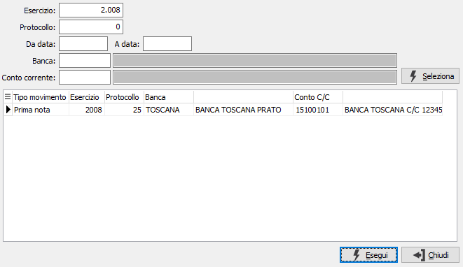
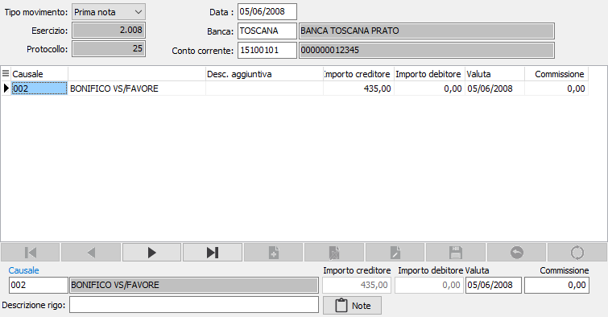

Manutenzione movimenti c/c
Il programma consente di registrare movimenti di conto corrente manualmente oppure visualizzare e modificare quelli generati in automatico dalla prima nota contabile.
L’inserimento di movimenti avviene con modalità analoghe a quelle dell’inserimento dei movimenti di prima nota contabile; i movimenti inseriti dalla manutenzione sono definiti di tipo manuale.
Per la variazione e la cancellazione è possibile procedere facendo un doppio clic sul campo data movimento oppure premendo il tasto di zoom, si apre la finestra di selezione per ricercare il movimento da cancellare o da modificare.

La finestra di selezione consente di inserire diversi criteri di selezione tramite i quali ricercare il movimento interessato. La pressione del tasto esegui riporta alla manutenzione con il movimento selezionato.
Accedendo al programma, appare la seguente finestra video:

La parte superiore della finestra contiene i dati di testa del movimento, il tipo movimento (normale o da prima nota), l'esercizio, il protocollo che sono gestiti in automatico dalla procedure.
DATA: indica la data del movimento.
BANCA: identifica il codice banca per cui si vogliono inserire o modificare i movimenti; in base alla banca selezionata saranno disponibili le causali di movimentazione. Sul campo sono attive le funzioni di ricerca sulla tabella stessa.
CONTO CORRENTE: identifica il conto corrente, relativo alla banca inserita, per cui si vogliono inserire o modificare i movimenti. Sul campo sono attive le funzioni di ricerca sulla tabella stessa.
CAUSALE: indicare il codice della causale relativa al movimento che si vuole trattare. Sul campo è attiva la ricerca F9 sulla relativa tabella.
DESCRIZIONE RIGO: descrizione aggiuntiva per il movimento. Tramite il pulsante Note è possibile inserire delle ulteriori annotazioni.
IMPORTI: inserire l'importo del movimento.
VALUTA: viene riportata in automatico se presenti condizioni che ne consentano una determinazione.
COMMISSIONI: viene riportato in automatico l'importo delle commissioni, se presenti condizioni che ne consentano una determinazione.